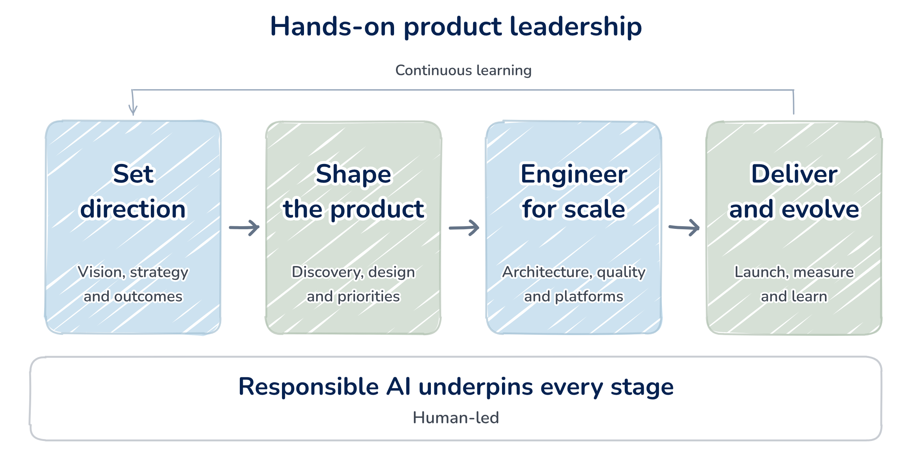
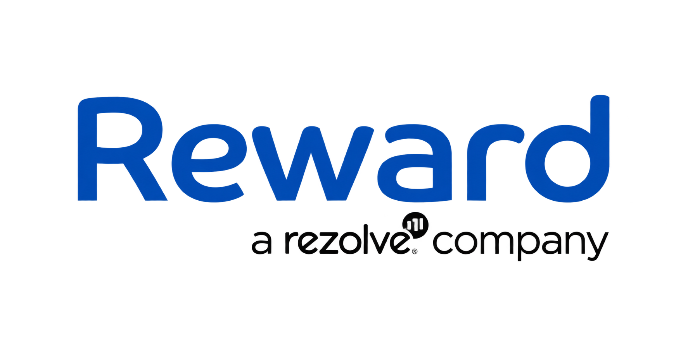
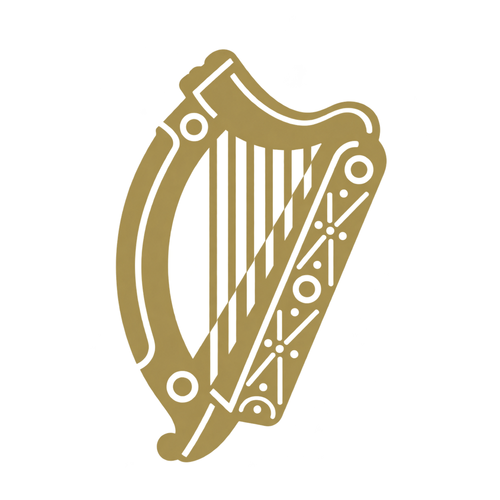
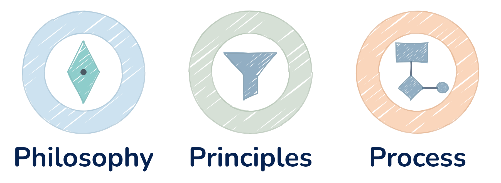
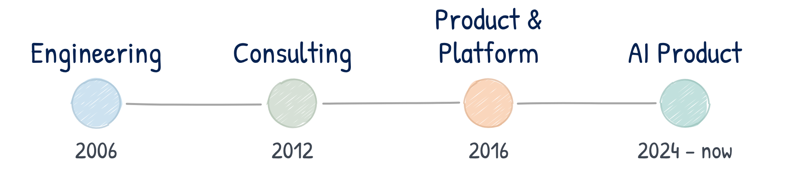
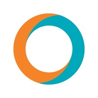
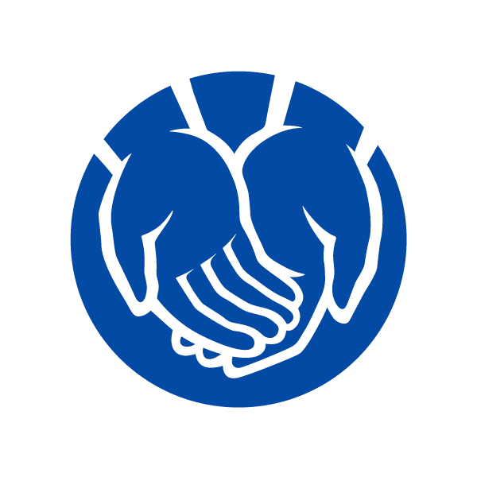
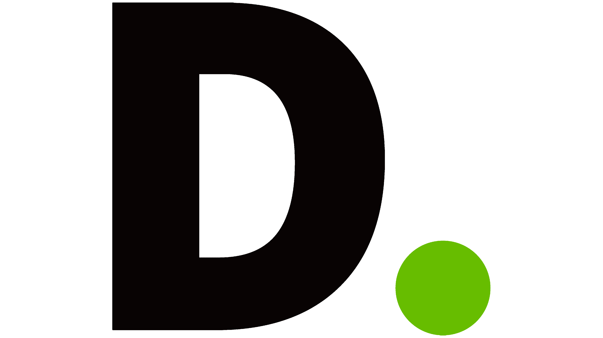
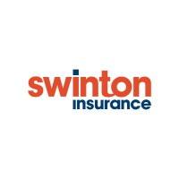
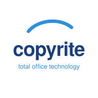

Product-led transformation · Responsible AI · Strategy & architecture
From complex business problems to products that work at scale.
I lead product strategy, architecture and delivery—building new platforms and improving established ones with hands-on technical depth.

10
new products built from zero
6
established products transformed
8
industries
01 / Selected work
Selected work.
More of the story: service design, automation and my first product.
All case studies
Driving global expansion.
An API-based loyalty platform, from concept to international launch.
Read the case study£1M+profit by year two

Modernising a national leave & claims platform.
Product ownership across three teams, connecting policy, service and payroll.
Read the case study1,000+hours saved per month
Digital underwriting for brokers.
Equine and livestock products, from concept to launch.
Read the case study$5Mgross written premium
02 / How I lead
Clarity before velocity.
Outcomes over output.

Make complexity clear.
Create systems to deliver.
Tracy Webb
VP Product Management, Cardholder ServicesMastercard“Salman’s active involvement in supporting pre-sales technical and product architecture discussions has been invaluable, showcasing his adeptness in managing a spectrum of business and technical stakeholders.”
Worked together at Reward
I have had the pleasure of working with Salman as a Product Owner at Reward. Salman works hard to align stakeholders, ensuring that he communicates a clear product vision. Salman’s active involvement in supporting pre-sales technical and product architecture discussions has been invaluable, showcasing his adeptness in managing a spectrum of business and technical stakeholders.
Notably, Salman’s contributions extend to the creation of comprehensive product documentation, encompassing both the functional and non-functional, which has supported us in facilitating clear understanding of our solutions and services, particularly among our global clients. Salman took an active role in understanding and supporting the optimal commercial outcome of our new business activities, particularly when we were entering new geographies.
Declan Ballantyne
PartnerEY Technology Solutions · Ireland“Salman is a product-minded leader who brings clarity to complex problems, unifies teams into a single delivery unit, and sets a high quality bar.”
Worked together on OLCS
Salman is a product-minded leader who brings clarity to complex problems, unifies teams into a single delivery unit, and sets a high quality bar. He applied this consistently over a large, multi-year modernisation of a system for a large government department in the Republic of Ireland. Salman is an excellent communicator and a real team player. It has been a pleasure working with him over the past 18 months.
View all recommendations 14 more voices
Piers SandersProduct DirectorReward Insights
Salman is a very strong technical product manager, and has a thorough approach to defining products, features and detailed stories. He led the development of the API product, the Global Merchant Marketplace (GMM), from concept through to launch with global clients. This included internationalisation (multi-language, currency and servicing) and managing a relationship with the client technical team.
Salman’s leadership transformed the GMM vision into reality, propelling Reward to new heights in the global fintech space. His strategic approach and relentless dedication have been instrumental in driving the company’s success.
Paul McGurnaghan OBEDigital DirectorDAERA
Engaged Salman at DAERA
DAERA engaged Salman on an Enterprise Architecture assignment, as he came highly recommended in this area of work. He certainly lived up to his reputation and hit the ground running in completing an EA maturity assessment and gap analysis within a short timeframe.
He expertly covered architecture governance, business architecture, application architecture, data architecture, technology architecture and tool support, delivering a very well defined and prioritised roadmap. I was very impressed with his complex analysis and ability to distil this down into practical steps leading to improvement. He is an expert communicator with excellent interpersonal skills.
So if you are looking to engage someone to assist or drive enterprise architecture within your organisation, you would be hard pressed to find anyone as good as Salman.
Diana DiamondGlobal Head of HR OperationsOcorian
Salman Ghaffar is leading Ocorian’s HR Transformation through AI and Automation, bringing structure and pace to a fast-evolving initiative. What stands out most is his ability to carve out MVPs and ship in two-week increments, rather than waiting months for a “big bang” solution.
Salman is relentless about value, constantly looking for where a relatively small investment can unlock a disproportionate return, often targeting opportunities in the region of 10–25x ROI.
As the initiative has grown, Salman has continued to shape and lead the broader HR transformation roadmap. He has a real ability to operate at every level, from setting the wider direction and driving complex initiatives through to working through the detailed data and process decisions needed to make them work. He brings together technical teams, delivery partners and stakeholders, navigates complex dependencies and keeps everyone aligned around the broader outcome.
Beyond delivery, Salman brings real intelligence, strong product thinking and a genuinely collaborative, considerate manner, with plenty of quick wit along the way. We’re holding on to him for as long as we can, but I wouldn’t hesitate to recommend Salman to any organisation once his time with us ends.
Justyna JohnGlobal Head of Product and Commercial MarketingReward
I worked closely with Salman across both Product and Marketing and he consistently brought a strong, solutions-driven Product Manager mindset to our go-to-market deliverables. He has a real ability to cut through complexity, bring clarity to challenging product areas and elevate how we position and communicate value.
His input was pivotal in strengthening our overall go-to-market strategy and improving the quality of our commercial outputs. Salman’s commercial insight and ability to turn product features into clear market value strengthened our GTM story.
Natasha O’KaneSenior Transformation & Delivery Leader
Managed Salman directly at Ocorian
Salman is an exceptional product leader, and someone I very much hope I get the opportunity to work with again.
What sets Salman apart is his ability to take something ambiguous and turn it into a product that feels obvious. He can walk into a room with a loosely defined problem, run a brilliant workshop, ask exactly the right questions and bring structure to everyone’s thinking, always pulling the conversation back to the user, the outcome and where the real value lies.
From there, he makes it tangible. Salman combines really strong product and design-thinking skills with AI and rapid prototyping to move incredibly quickly from an idea to something people can actually see, experience and respond to. More than once, he’s come back with something so slick and so close to what I had in my head that I’ve wondered whether he’d somehow read my mind.
He’s equally strong with stakeholders. He builds relationships beautifully, draws out what people really need rather than simply taking requirements at face value, and knows how to influence and drive a group towards an outcome without losing people along the way.
And when the rest of us inevitably disappear into the weeds of technology, process and delivery, Salman has a wonderful ability to pull us back up and remind us what we’re actually here to create.
He has real product judgement, an instinct for the user and a genuine care for the craft of building beautiful products. I would work with Salman again in a heartbeat, and I really hope I get to.
Aditya KawatkarSenior Test ConsultantEY · Ireland
Salman understands people as individuals. He adapts his leadership style to bring out the best in each person, builds trust quickly, and turns groups into high-performing teams. People don’t just deliver under Salman — they grow and reach their full potential.
Sunny MatharuCTOThirdEye Consulting
I have worked with many Business Analysts over the last 10 years. Salman has been one of the very best. Due to his varied background, he has a rare blend of technical and functional skills, backed up by solid architecture principles, all while working in an Agile project environment.
A fantastic example of the esteem he is held in, and the value he offers, is the way in which our client management pressed me to find out what I could do “to make sure we keep Salman on our projects”. He is endearing, diligent and a joy to work with. His departure was a loss to Deloitte, as his acquisition will be a massive boon to whomever he works with in the future.
Heidi PhilyawDirector Special ProjectsLiberty Mutual · USA
I would highly recommend Salman as a product owner. He joined our project about a month in, post discovery and framing, and didn’t miss a beat. He’s an excellent communicator, negotiator, and team player. His confidence and leadership has helped propel our product forward to an incredible MVP delivery.
As a newcomer to the Agile methodology, I have learned a tremendous amount from him, especially in respect of user journeys, user stories, requirements engineering, and backlog management. He is extremely methodical and goes well in depth in testing, thinking up nearly every scenario a user could possibly try. I have so enjoyed getting to know Salman personally and professionally, and look forward to our continued collaboration!
Gillian SpenceProduct Consultant ManagerKainos
Worked together at Allstate Northern Ireland
I had the pleasure of working with Salman for 18 months at Allstate Northern Ireland, collaborating on a SAFe initiative in the Claims space. Salman is a goal-driven, customer-centric product owner with a desire to drive business value for his stakeholders. He repeatedly sought ways to continually improve, both at a team level and at a program level within the Release Train.
Salman has a firm understanding of Agile principles and practices. He was instrumental in driving the delivery of core ETL components for the product. This complex feature demonstrated his desire to take on extra responsibility. Overall it was a pleasure working with Salman and he would be a great asset to any team.
Sunil I. ModiSenior ManagerDeloitte
Salman was an inspiration for many team members in the program; his ability to partner with multiple workstreams and get the jobs done surpassed expectations. His contributions really made a big impact on the success of the program. I thoroughly enjoyed working with him; he is always full of genius ideas and has a friendly attitude with his co-workers. He has a great analytical and product mindset. Very happy to recommend him.
Ryan IngsBusiness AnalystNorthern Ireland Electricity
Reported to Salman at Northern Ireland Electricity
I worked with Salman on a project over 9 months, to review the client’s business processes, identify delays and recommend improvements. Salman was the driving force in the team’s approach to the project, expertly managing workshops and stakeholders to gather the required information. He shared his experience with the team and I feel he helped me develop within my role.
Bhargava AdapaSenior Technology ManagerCaspian Digital Solutions · Malaysia
It’s my absolute pleasure to recommend Salman for his exceptional contributions to our projects at Caspian Digital Solutions. Salman’s ability to dive deep into the technicalities of User Requirement Specifications (URS) has been a game-changer for us. His meticulous approach ensured that every project requirement was not only captured but also aligned perfectly with our strategic goals.
Beyond the URS, Salman demonstrated unparalleled skill in crafting the project implementation plan. His strategic foresight and detailed scheduling of each phase allowed us to anticipate challenges and adapt quickly, ensuring a smooth and successful execution. His contribution to creating User Acceptance Testing scenarios was equally impressive, and was instrumental in minimising post-launch issues and enhancing user satisfaction…
Salman’s consulting acumen was invaluable. His insights and advice often steered us through complex decisions, balancing technical possibilities with business realities. I cannot recommend him highly enough for any endeavours he chooses to pursue.
David HolmesService Design DirectorXDC Solutions
Worked together on DVSA discovery
I worked with Salman on the DVSA discovery project. Salman is a professional through and through; he has a keen eye for detail and a solid understanding of the BA and Product domain. Salman is very friendly and supportive, a strong team player and a pleasure to work with. I would recommend Salman because he makes a great addition to any team: a solid all-rounder.
Ian StewartDirectorCopyrite Business Solutions
I worked with Salman for a number of years and he was a respected, well liked and valued member of the team. He was extremely self-sufficient, resourceful and capable, and his commitment and work ethic was exemplary.
Salman was at the forefront of the software technology in our sector at the time, which required him to be resourceful, use his initiative and work with others within Copyrite and our partners. His communication skills helped him to work well with others, relate with all the relevant external parties and work well in the team. His technical and analytical skills meant that he grasped the project quickly and was able to lead and drive the project on at a high level. It is my pleasure to recommend Salman.
Currently / Ocorian
Putting AI to work.
Beyond the prototype.
As Senior AI Product Manager, I report to the CIO and lead the business–IT relationship for HR transformation.
I’ve delivered live process automation across 20 countries and built an AI-enabled onboarding MVP that has transitioned to the development team.
Current work · HR transformation80%+
reduction in processing time
for core automated HR processes
20 countriesAI · Automation · Integrations
04 / Experience
A track record
across complex domains.
Professional training and hands-on experience across product strategy, architecture, large-scale programme management, engineering, quality and service management.
Explore my capabilities & credentials
AI Product Leadership2024–present
Apr 2026 – presentCurrent
Senior AI Product ManagerOcorian
Reporting to the CIO, act as the business-IT relationship lead for HR transformation.
- Ocorian is a global fund, corporate and private client services provider, supporting asset managers, financial institutions and family offices across 25+ jurisdictions.
- Created the vision for Platform-I, a future-state HR technology platform designed to transform HR service delivery across the employee lifecycle through AI, automation, integration and self-service.
- Partnered with the Head of HR Operations and global HR leadership across 20 countries, translating business challenges into a strategic HR technology and AI roadmap and prioritising initiatives based on value, feasibility and ROI.
- Led the adoption of AI and automation across HR, applying GenAI, RAG, prompt chaining and orchestration to identify and deliver high-value transformation opportunities.
- Delivered live automation across core HR processes, including Change of Circumstance and reference-letter generation, reducing processing time by over 80% and improving SLA compliance across 20 countries.
- Designed and built an AI-enabled end-to-end employee onboarding platform, integrating recruitment, SmartRecruiters, BambooHR, iManage and Veremark. Took the concept from future-state vision and product design through to a working MVP, now transitioned to the development team.
- Established an MVP-led transformation model, enabling rapid validation and incremental delivery of AI and automation initiatives rather than traditional big-bang programmes.
- Shaped the future-state HR technology ecosystem, including process architecture, integrations, data flows and opportunities for AI-enabled self-service across the employee lifecycle.
- Represented the HR transformation strategy to the CIO and CDO, providing executive-level visibility of roadmap, investment, risks, capacity, benefits and ROI.
- Directed resourcing, budget and delivery priorities for a Mauritius-based technology team, aligning delivery capacity with strategic transformation priorities and business demand.
- Built stronger alignment between HR and IT by introducing structured problem discovery, prioritisation and value assessment, accelerating delivery of high-impact transformation initiatives.
- Technology & tools: OpenAI, Workato, Power Automate, custom apps.
Mar 2024 – Feb 2026Product OwnerEY · Department of Education (Ireland)
Product Owner across 3 delivery teams on OLCS — national platform serving 90,000+ teachers, ~4,000 schools, and 20,000+ school users, managing statutory leave and payroll workflows in highly regulated environment.
- EY is a global leader in assurance, tax, and advisory services, helping clients drive growth and navigate complex challenges.
- Reported to EY Partner, owned roadmap integrity, risk reporting, and executive progress reviews for a regulated public-sector transformation.
- Converted undocumented legacy logic (policy, tribal knowledge, system behaviour) into structured, testable business rules, accelerating development and testing.
- Increased velocity ~5 to 30 story points by enforcing backlog prioritisation, dependency management, and outcome-focused delivery.
- Introduced risk and progress overlay mapping on story maps to expose cross-team dependencies and unblock gridlock; shifted executive discussions from blame-driven to solution-led decisions.
- Leveraged flow metrics to influence senior EY and Ministry leadership; secured programme transition from Scrum to Kanban, improving predictability and cycle-time.
- Embedded GDPR-by-design controls (RBAC, auditability, data minimisation, encryption safeguards) into requirements; strengthened compliance for high-risk data.
- Entrusted with 2 additional teams. Contract extended multiple times based on measurable impact.
- Conceived and piloted Generative AI early-warning system to flag high-risk leave submissions; reduced claim rejection rates by ~50%, preventing payroll disruption and operational failure.
- Re-engineered multiple fragile legacy workflows and unlocked 1,000+ operational hours a month in savings across the programme while preserving core database integrity.
- Technology & tools: Azure cloud, MFA, SSO, MUI, Figma, Visio, GitHub.
Product & Platform Leadership2016–2024
Nov 2023 – Aug 2024Product ManagerMalaysian Board of Technology
Brought in initially to support sales, then subsequently appointed to lead product discovery and delivery.
- MBOT is a government-funded professional body responsible for regulating and recognising technologists, undertaking a programme to modernise its member recognition platform and associated business processes.
- Led product discovery, defining vision, objectives, and core user segments.
- Established the stakeholder engagement and governance approach across regulatory and operational groups.
- Elicited and prioritised functional & non-functional requirements, creating and managing the product backlog.
- Defined KPIs and success measures to track adoption, delivery performance, and operational impact.
- Led end-to-end product delivery, achieving on-time launch of the online application and mobile app with an 80% increase in engagement.
- Managed a globally distributed team spanning Egypt, India, Iran, Nigeria, Malaysia, and Pakistan across multiple time zones.
Started 2023Product Owner / FounderIndependent consumer brand · Amazon UK
Built and launched a consumer brand sold through Amazon UK.
- Owned brand identity, product design, packaging and compliance; achieved a 4.8-star customer rating.
- Used competitor, keyword and customer analysis to define positioning and the product roadmap.
- Optimised advertising and conversion through A/B testing and keyword targeting, tracking sales rank, click-through rate and conversion.
- Directed designers and creative output, including marketing copy, A+ content and listing assets.
Sep 2021 – Sep 2023Senior Product ManagerReward
Led the Global Merchant Marketplace (GMM) platform from concept to launch and scaled globally.
- Reward, a global fintech company, partners with banks and retailers to enhance customer engagement. The company aimed to expand into global markets by developing an analytics-backed and API-based loyalty platform as a service (PaaS).
- Directed platform vision, roadmap, and OKRs to align product execution with enterprise strategy and scalable growth.
- Led the development of frameworks for product discovery, governance, and operational acceptance testing.
- Ensured compliance with industry standards (PCI-DSS & GDPR) and KSA/UAE specific requirements.
- Defined and managed the product backlog, attended daily scrum meetings, led sprint reviews.
- With a cross-functional scrum team, transformed GMM concept into B2B2C mobile app platform within six months.
- Collected customer feedback using prototypes and engagement metrics to ensure end-to-end mobile journey remains user-centric.
- Designed a unified data model for multi-tenancy, enabling separate internal deployments and data warehouses.
- Collaborated with data operations to establish data pipelines and defined/tracked KPIs for the platform.
- Analysed offer redemption data to drive actionable insights, shaping offer strategies and the roadmap.
- Collected refund data, optimised the refund algorithm, reducing system gaming risk by an additional 50%.
- Launched cross-border, multi-language capability across 20+ countries, whilst de-risking finance and retail invoicing through automated commission and FX validation.
- Aligning with the industry trends, differentiated the product through real-time cashback and SDK, securing a competitive victory for a major UK digital bank, Monzo.
- Transformed the servicing capability through innovating an internal service management target operating model.
- The new operating model was underpinned by a servicing system fully integrated with the internal content management system (CMS) and external banks via APIs.
- New operating model enabled efficient customer query management, delivering internal cost savings of over £150K per year per bank partnership, and enabled an additional revenue stream.
- Innovated “Smart resolutions” for cashback-related queries, automating disqualification reasons, leading to an 80% reduction in customer queries and exceptional user experience on mobile applications.
- Developed and implemented a profit and loss model and pricing strategy, based on product offerings.
- Partnered with senior leaders at First Abu Dhabi Bank (UAE) & Warba Bank (Kuwait); led SIT & UAT and OAT, ensuring smooth adoption of the product.
- Achieved break-even in the first year, followed by million+ profits in the second year.
- Technology & tools: AWS Lambda and Athena, Okta, .NET, SQL Server, Lucidchart, Swagger, Testmo, JIRA, Datadog, Confluence, GitHub, Figma and Tableau.
Market ImpactMarket Impact
- Targeted retail offers achieved a 30% increase in customer engagement and a 15% rise in card usage for partner banks. This competitive advantage stems from real-time cashback at the point of sale (POS) through seamless integration with the bank’s payment system.
- Created an onboarding plan that streamlined the process, reducing time-to-market from 6 months to 10 weeks.
- Assisted in onboarding local and global banks with a million-plus customer base.
- Partnered with the regional director to establish a strategic partnership between Reward & VISA.
- Partnered internally to manage the contract negotiations with major banks, leading to successful agreements with major local and global banks including Monzo and Qatar National Bank.
- Led the product workstream in enterprise pre-sales engagements, resolving complex architectural and regulatory challenges to strengthen deal progression.
- Led product positioning with marketing, sharpening value articulation to improve enterprise win rates and market traction.
Feb 2020 – Sep 2021 Principal Product OwnerLiberty IT · Liberty Mutual
Principal Product OwnerLiberty IT · Liberty Mutual
Led the design and development of equine and livestock underwriting products from concept to launch.
- Liberty Mutual Insurance, a Fortune 100 company, boasts a $39B+ revenue and a global presence.
- Led product development and digital transformation in highly regulated environment.
- Built strong relationships with stakeholders and negotiated timelines, estimates, benefits, and risks.
- Collaborated with cross-functional teams in engineering (XP), design (UX/UI), and business to create, prioritize, and deliver the product roadmap and backlog.
- Partnered with user expert for UX design, user research and acceptance testing.
- Gathered regular feedback through demos and influenced business thinking/decision-making.
- Coached business on multiple feature prioritisation techniques and established theme scoring.
- Taking initiatives, performed continuous discovery to define and refine product vision, business goals, metrics, user personas, empathy maps, service blueprint, customer journey & revenue streams.
- Designed flexible data and application model, allowing smooth application workflow management.
- Analysed underwriting rules, crafted product requirements which delighted the client.
- Provided delivery leadership and meticulously organised and managed dependencies.
- Fully leveraged automatic document generation to reduce customer waiting times, automating invoice generation, policy generation and payment schedules.
- Monitored conversion rates/revenue to take corrective actions.
- Cultivated a culture of transparency, inspection and adaptation through mentoring and coaching.
- The team became an “Exemplar team” within the organisation, winning CIO awards for product excellence.
- Technology & tools: AWS serverless, Angular, DynamoDB, Mural, Pivotal Tracker, InVision, Confluence & Heap.
Market ImpactMarket Impact
- Delivered internal equine underwriting product within 6 months. Followed by release to external brokers including quick quote mobile app.
- Achieved a 75% reduction in application processing times, 98% reduction in document generation time and enabled the business to roll out the product to thousands of brokers across the US, yielding double-digit growth in the first quarter post-deployment.
- Over three million of business written within 3 months of product launch.
Mar – Nov 2019Senior Business AnalystNorthern Ireland Electricity
Consulted at NIE, building a ground-up business process improvement capability.
- NIE, managing Northern Ireland’s electricity infrastructure, pursued business transformation in the regulatory period.
- Led the formulation of a systematic business transformation framework (DMAIC based).
- Negotiated the framework with the NIE board of directors, influencing the highest level of the organisation.
- Acquired board approval for funding execution phase.
- Partnered with a project manager, formed a team of 3 BAs and led parallel workstreams across Finance, Assets and Property management.
- Partnered with the programme director, established a prioritisation framework based on NIE values and goals.
- Conducted workshops with wider stakeholders and ranked business processes based on criticality & efficiency.
- Coached programme team on business process modelling (BPMN), value chain, and process cycle efficiency.
- Led the creation of tech/business architecture viewpoints to aid IT strategic planning.
- Led the documentation of as-is/to-be business processes and capabilities, applications modules, KPIs, process metrics, cycle efficiency, value/non-value-added tasks to identify existing issues.
- Performed root cause analysis.
- Propelled enhancement suggestions through analytics, SAP improvements, automation, and market trends.
- Presented visualisations of key findings to the C-suite.
- Categorised and ranked transformation requirements for strategic business planning.
- Defined process governance framework and advocated culture change.
- The programme identified multi-million pounds of efficiencies and over ten business transformation opportunities.
- Technology: SAP, Maximo, Visio, Power BI.
Feb 2018 – Feb 2019
Product OwnerAllstate
Provided Product leadership for a high-stakes, time-sensitive transformation programme.
- Allstate Insurance, a Fortune 100 company with $39+ billion revenue, globally launched the Digital Claims Programme using SAFe to accelerate claim processing for 16,000 users, achieving annual cost savings of over $10 million.
- Partnered with the claims business to comprehend desired outcomes.
- Created and managed product roadmap and the backlog.
- Defined, presented, and negotiated team-level PI objectives within the SAFe framework.
- Conducted workshops involving the business, EA, DevOps, development, testing, SMEs, and vendors.
- Shaped business and system integration landscapes, focusing on user-journey-based integration requirements.
- Employed independent judgment to identify and manage internal/external stakeholders.
- Modelled as-is / to-be business processes for end-to-end claims handling, tailored to the target audience.
- Led the delivery of complex features for each Programme Increment (PI).
- Identified, mitigated, and escalated delivery risks.
- Monitored and measured KPIs for deployed features.
- Led the resolution of integration and performance issues related to ETL using Ab Initio, involving technical analysis and collaboration with various teams and vendors.
- Created documentation using rich pictures, storyboards, data flow/sequence diagrams, and mind mapping.
- Led performance testing, production support, and defect triage.
- Served as a role model, motivating team members to strive for excellence.
- Technology & tools: Tibco, .NET, Ab Initio, Confluence and JIRA.
- Provided programme integration architecture alongside product ownership, aligning business and enterprise architecture strategies and analysing non-functional requirements.
Oct 2017 – Mar 2019Product OwnerSavvie · Ethel
Developed Savvie’s financial advice product and transformed Ethel’s existing product, supporting both startups with product and Agile delivery.
- Defined vision and objectives (VMOST). Conducted user research and executed competitor and SWOT analysis.
- Formulated the business model employing the Business Model Canvas.
- Secured proof of concept funding and managed the project.
- Using design thinking techniques, created empathy maps, user personas, value proposition canvas, jobs to be done, problem definition, service blueprint and customer journeys.
- Created product backlog and roadmap, themes, epics, and user stories.
- Introduced lean and agile ways of working within the team.
- Modelled data and designed application architecture.
- Technology & tools: .NET, Confluence, Trello, and JIRA.
Jul – Oct 2017 Product OwnerDVSA
Product OwnerDVSA
As part of the discovery team, led Product and Business Architecture streams, adhering to the GDS guidelines.
- DVSA, an executive agency under the UK Department for Transport, aimed to transform the Driver’s theory test service to achieve annual savings exceeding £10 million, serving over 1.2 million customers annually.
- Identified, engaged, and managed senior stakeholders in a multi-vendor environment.
- Partnered with the department heads for as-is business process analysis.
- Identified pain points, future aspirations, and alignment with the vision.
- Analysed capabilities: Test Content, Counter fraud, Policy, Legislation, Learning, Publications, Innovation, Contact centre operations, Contracts management, Corporate reputation, Finance, and DVA Northern Ireland.
- Techniques used: interviews, rich pictures, process flow diagrams and business activity modelling.
- Defined user segments (40+) and key processes (60+).
- Developed hypothesis for improving customer experience.
- Analysed customer complaints/enquiries data to identify improvement opportunities.
- Identified requirements for changing legislation (e.g., digital theory test pass certificate).
- Led creation of user journeys and as-is/to-be service blueprints and business capabilities.
- Negotiated feature prioritisation framework with senior stakeholders.
- Developed product roadmap for the minimum viable product (MVP), Alpha phase and beyond.
- Led the development of product backlog with a team including user researchers, service designers, security experts, data scientists, and solutions architects.
- Collaborated with SMEs on investigating impacts of GDPR and PCI DSS on proposed service.
- Conducted market research to discover and evaluate emerging online proctoring products.
- Tools and technologies: Proprietary systems, microservices, JIRA, Confluence.
- Developed a discovery backlog of 10+ themes and 100+ epics with the multidisciplinary team.
Mar – Jul 2017 Enterprise ArchitectDAERA
Enterprise ArchitectDAERA
Provided consultancy to DSD, to establish enterprise architecture (EA) capability from the ground up.
- DAERA is a ministry in Northern Ireland, responsible for sustainable economy, environment, and rural community.
- Partnered with the director of digital to define EA’s vision, influencing at the highest level.
- Developed an EA capability maturity assessment framework, based on TOGAF.
- Partnered with the heads of departments and assessed the EA maturity across all business capability areas.
- Involved twenty-five senior stakeholders across development, security, infrastructure and operations through interviews and workshops to gather requirements, concerns, and the current state of the EA.
- Defined as-is business, applications, data, and technology architecture.
- Developed high-level target capability, IT governance and application portfolio strategy models.
- Led an audit of the existing application, data & tech landscape and created architecture viewpoints.
- Mapped applications to technology to feed into the technology procurement and retirement roadmap.
- Conducted market research and benchmarked EA tools to address DSD requirements.
- Researched the current trends around the EA, using Gartner and Forrester.
- Developed a five-year roadmap using T-map with six dimensions to achieve mature and sustainable EA capability.
- Tools and technologies: Excel for analytics, PowerPoint.
Jun 2016 – Mar 2017Product Delivery LeadDAERA Digital Services
Led three cross-functional scrum teams across the Master Data Management programme.
- Led the development and delivery plan of over ten interdependent software components.
- Provided delivery estimates and timelines to senior stakeholders including the divisional director.
- Took the teams on a journey of changing mindsets to adopt Lean/Agile practices.
- Provided initial training and ongoing coaching on basic Agile concepts, planning, estimations, stand-ups, retrospectives, burndown, velocity, and evidence-based management.
- Trained product owners to effectively manage the backlog, collective ownership, story mapping and user stories.
- Led releases, deployments, system integration testing, UAT, security and performance testing.
- Partnered with the head of the strategic systems department, devised an Agile maturity framework; assessed the existing level of maturity across teams and established a target maturity level.
- Initiated and led the Product owner’s forum across the DSD, to shape the change in culture.
- Gathered and communicated key delivery metrics to monitor the progress and plan the releases.
- Fostered a culture of transparency, inspection, and adaptation.
- Influenced senior leadership to enact Scrum and empirical product development.
- Tools and technologies: Azure for requirements, JSON-based APIs, .NET, and Azure cloud.
- Allocated resources across teams and led scrum ceremonies, alongside delivery planning, coaching and release leadership.
Consulting Leadership2012–2016
Aug 2015 – Jun 2016
Senior ConsultantDeloitte, Strategy and Architecture
IT strategy, Agile capability development and a global Salesforce analytics product for Eli Lilly.
- Deloitte is a multinational professional services firm offering expertise in audit, consulting, tax, and advisory services. Known for global reach, industry leadership, and innovative solutions.
- Led national Agile learning initiative, which included collaborating with other service lines to offer and deliver training courses. Performed market research, negotiated prices, and managed budgets.
Senior Business AnalystChoice Housing
- Choice Housing, Northern Ireland’s largest housing association, partnered with Deloitte to develop its IT strategy.
- Role: As a Senior Business Analyst, led client engagement for IT strategy formulation.
- Conducted interviews and workshops with senior executives & management to assess the current Enterprise Architecture capability maturity (business, applications, data analytics, infrastructure).
- Performed IT services capability maturity assessment.
- Assessed suppliers, business, customer requirements and governance.
- Performed market research for latest digital industry trends and identified barriers to innovation.
- Partnered with project manager to shape overall IT strategy.
Product OwnerEli Lilly
- Eli Lilly, a global pharmaceutical company with affiliates in approximately seventeen countries, aimed to enhance analytics by capturing account intelligence through the Salesforce platform.
- Role: As a Product Owner, managed the new product development from concept to successful global launch.
- Gathered requirements from stakeholders and developed user stories and managed product backlog.
- Led data modelling, aligning the business processes, and providing flexibility for global affiliates.
- Negotiated the cost of custom development.
- Managed UAT with senior global stakeholders, including the US-based head of analytics.
- Gathered feedback and incorporated it into the product roadmap.
- Led the data migration from SharePoint into the Salesforce based product.
- Led the offshore Salesforce development team, sprint ceremonies and reporting of sprint performance indicators for Eli Lilly.
Nov 2012 – Aug 2015ConsultantDeloitte, Strategy and Architecture
Product, architecture and analysis work across secure-card services, analytics, insurance and public-sector procurement.
Business developmentDeloitte · business development
- Undertook a variety of business development roles.
- Supported RFI (Request for Information), Bids, and Pre-Qualification Questionnaires.
- Designed solution architecture for the Law enforcement agency RFI.
- Developed an internal User Story Mapping training course.
Product Owner · Business Analysis & Test ArchitectureDeloitte · managed analytics
- Deloitte’s managed analytics initiative offers analytics products as SaaS, supported by a new cloud platform for rapid, flexible hosting of analytics applications and a secure access portal.
- Role: As Product Owner, managed the product development.
- Elicited requirements from a variety of stakeholders, including business security and enterprise risk services.
- Defined user stories and prototyped user interface designs.
- Managed product backlog.
- Alongside product ownership, delivered business analysis and test architecture for the Managed Analytics platform.
- Designed user security and permissions with the product architect, Business Security and Enterprise Risk teams, and established documentation practices for Agile delivery.
- Evaluated test management tools and vendors through proof-of-concept demonstrations, cost-benefit, integration and learning-time comparisons.
- Built a cloud-based browser automation framework using Java, Selenium and TestNG for nightly continuous integration.
- Integrated JIRA, TestRail and automated test results through REST APIs; supported functional testing, release practices and test environments.
Technical Business AnalystDAERA
- DAERA was procuring a new animal health system, and Deloitte provided advisory services for the process.
- Role: As a Technical business analyst, evaluated the responses from six vendors throughout procurement, and presented key findings and justification for the evaluation to senior stakeholders. Evaluated domains: non-functional requirements, including business continuity, disaster recovery and data archiving; integration with partner systems and government payment gateway; Software Development Lifecycle (SDLC) and innovation approach; solution architecture and its alignment to DAERA’s vision for Service Oriented Architecture (SOA).
Technical Product OwnerDVLA
- Deloitte led the replacement of the DVLA’s Secure Cards System, handling over 5 million UK driving licences, digital tachographs, and biometric residence permits.
- Role: As Technical Product Owner took ownership of the full product lifecycle, including requirements definition, integration with multiple vendors, non-functional requirements, and operational acceptance testing (OAT).
- Redesigned the data orchestration processes, adhering to GDPR & government security requirements.
- Led functional & integration design for data processing, image processing & encryption components.
- Collaborated with stakeholders to define complex requirements.
- Stakeholders included multiple UK/EU government agencies, secure cards manufacturer, production machines manufacturer, data centre managers, incumbent suppliers, and sub-contractors.
- Managed product backlog and led product demos.
- Defined and delivered non-functional requirements, encompassing failover design, performance, scalability, security, access control, monitoring, backup and restore, capacity planning, application upgrades, and logging.
- Designed failover and resilience solution & led testing, across multiple data centres and card production sites.
- Identified, mitigated, and escalated risks.
- Led the definition and sign-off of the OAT plan from all stakeholders involved.
- Led OAT execution across four data centres & two production sites, coordinating activities across cross-functional teams of developers, testers, DevOps, and operations.
- Engineered and managed the testing of the technical aspects of the cutover plan for the go live.
- Collaborated with senior stakeholders to define processes for service management based on ITIL best practices, including incident, configuration, release, and user access management.
- Tools and technologies: ImageMagick, Zabbix, Java, SoapUI, Jenkins, JIRA, Skyscape, and Rackspace.
- Led stakeholder communication planning, requirements workshops, prototyping and BDD acceptance criteria; supported functional, system, UAT and performance test strategy and release estimation.
- Configured JIRA workflows for user stories, defects and changes, structured project epics and linked requirements back to the original tender.
- Recognised for coaching external suppliers in Agile delivery and improving retrospectives so issues were addressed before subsequent sprints.

Digital Product OwnerSwinton
- Swinton is one of the largest insurance providers in the U.K. and has been working on a major I.T. transformation programme to rebrand all the external sales channels and provide a cross-channel sales experience.
- Role: As a Digital Product Owner, led the product management of Swinton House Insurance.
- Defined customer journeys across the web and mobile devices.
- Requirements elicitation using interviews & prototyping.
- Using SQL performed data analysis for requirements prioritisation and refinement.
- Developed user stories to enable Behaviour-Driven Development (BDD).
- Prioritised and maintained the product backlog & streamlined the requirements elicitation across the programme.
- Demonstrated iterations to product owners, Marketing, UAT teams, the CEO and CIO; supported sprint planning, estimation and retrospectives.
- Improved specification templates to reduce defects and removed bottlenecks from testing and UAT.
- Received three Deloitte Limelight awards for collaboration and client value.
Business AnalystHelm Housing
- Helm Housing provides social housing to more than five thousand tenants around Northern Ireland. Deloitte was involved to assist in forming the IT Strategy.
- Role: As a Business Analyst, led enterprise architecture stream of the IT strategy.
- Conducted stakeholder interviews, including the Finance Director & CEO, to identify issues with current services.
- Conducted IT and business capability maturity assessments for benchmarking and improvements.
- Conducted end-user surveys, to measure the current IT service effectiveness.
- Reviewed IT infrastructure and identified business-process bottlenecks and points of failure.
Engineering & Earlier Experience2004–2012
Dec 2009 – Sep 2012Software EngineerMformation
Technical lead for user management in a mobile device management platform.
- Developed software for a platform managing millions of Apple, Android and Symbian devices, with customers including Vodafone and T-Mobile.
- Refined technical requirements with product owners and worked with architects on solutions; developed, tested and documented Java APIs using Spring, Hibernate, Oracle DB, PL/SQL and SoapUI.
- Integrated services using JSON/XML and RESTful APIs.
- Led offshore testing and advised on test strategy; supported deployment teams and resolved customer acceptance defects. Became a subject-matter contact for end-to-end product testing.
- Recorded one of the highest bug-fixing rates in continuous-engineering rotations; introduced Review Board and supported adoption.
- Trained local and global junior colleagues and new hires, including buddying responsibilities.
Nov 2007 – Nov 2009Software Systems EngineerOpenwave
Mobile gateway engineering, content adaptation and automated testing for telecom operators.
- Designed UML components and developed Java J2EE/J2SE software for mobile gateway products at a provider serving 70+ operators, including T-Mobile, Orange and Vodafone.
- Developed content adaptation that converted documents into HTML for non-smartphones, deployed at a mobile proxy gateway processing 20+ transactions per second.
- Automated installation and product testing using JMeter, Perl and scripting; implemented JUnit tests in Linux/Solaris environments and maintained components through Perforce.
- Achieved 80% unit-test coverage; led team test-case work, transferred knowledge to QA, isolated faults and tracked defects through resolution.
- Led departmental code review using Review Board and contributed internal/external product documentation.
- Carried out ISO quality-management audits; proposed audit templates that reduced auditor preparation time by at least 50%.
- Owned team induction documentation and processes and supported client product demonstrations.
Mar 2006 – Nov 2007
KTP Associate (Business Analyst)COPYRITE · Bournemouth University
Requirements, software product development, workflow improvements and customer implementation.
- Partnered with Bournemouth University for a small firm, managed project budgets, introduced analytics capability, and independently developed a new product, adding 150K in revenue each year.
- Led the Ricoh software developer programme from requirements and UML design through Java development, testing, deployment and user training, applying PRINCE2 delivery practices.
- Recorded £50,000 profit in the first two quarters, separate from the later revenue measure.
- Implemented INVU document management, reducing document-processing time by 70%; introduced Crystal Reports/VBA reporting for Service and Sales.
- Reported to directors on IT strategy, introduced email marketing and formed INVU/eCopy reseller partnerships.
- The successful Knowledge Transfer Partnership programme was selected as a UK Government case study.
Jan 2005 – Feb 2006Collections AssociateGE Consumer Finance · Leeds, UK
Customer recovery and call-quality work within agreed collections policies.
- Assessed customer accounts and selected appropriate recovery actions while maintaining quality standards.
- Met performance targets throughout the 13 months recorded and trained in three additional collection skills.
- Selected for the Collections Quality Call Workout project to develop inbound/outbound calling scripts.
Jan – Aug 2004Business AnalystHalari Memon Jamat · Karachi, Pakistan
Led development of a member-registration system for a community welfare organisation.
- Led developers to design and implement a Visual Basic / MS Access registration system for an organisation serving thousands of community members; reduced registration time by 80%.
- Owned requirements gathering, design, testing, deployment and user training; improved internal IT infrastructure.
- Organised community IT workshops.
- Also developed the organisation’s website.
05 / Your next product leader
Have a complex
product challenge?
Let’s talk.
I’m interested in senior product roles where strategy, technical depth and delivery leadership can make a measurable difference.